In the 50s, Anfinsen experiments:
Proteins adopt structures that corresponds to their global minimum of free energy:
Protein folding problem can be restated as finding the structure corresponding to the global minimum of free energy. Different several characteristics of the folding affect the energy state of the system, and these can be represented mathematically using different expressions, where usually there exists a tradeoff between accuracy modeling the physical term and complexity of the mathematical expression. In the following, some options for modeling those will be presented.
https://manual.gromacs.org/documentation/current/reference-manual/functions/bonded-interactions.html
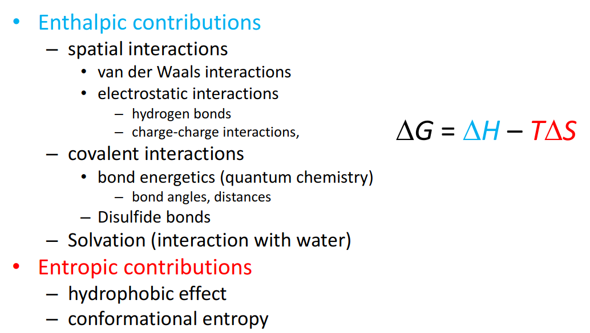
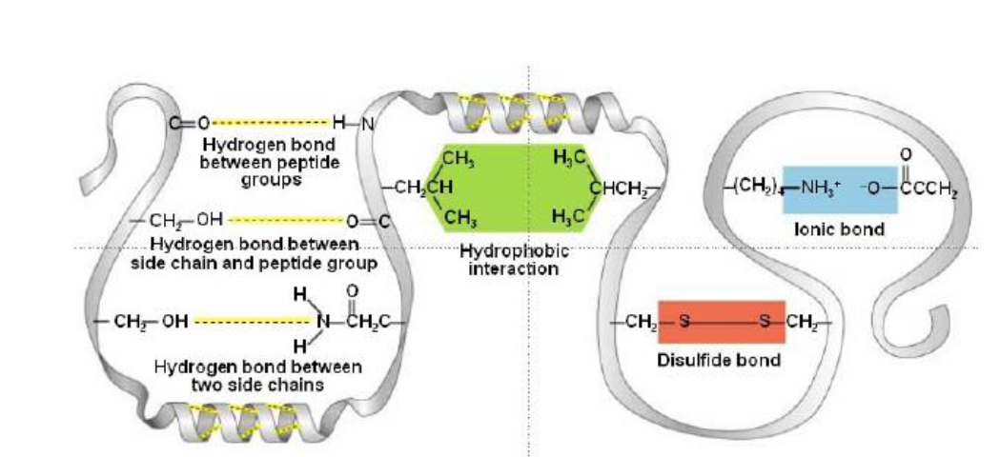
Correspond to:
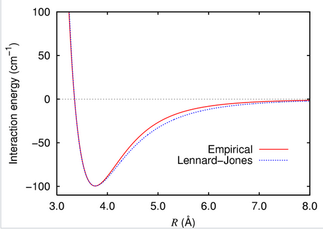
The force can be derived from the gradient of the formula:
Attraction between particles of opposite net charge(positive or negative), and repulsion between particles of the same symbol. In general these forces are depending additively of the net charge, and are strongly influenced by the characteristics of the solvant. It can represent the interaction between ions, and between ions and dipoles.
Usually modeled using Coulomb’s law, which in vectorial form is:
where:
and for other media we have:
Where represents the dielectric constant of medium (80 for water, 2-3 for protein interior)
Also can be used for modeling dipole-dipole interactions, where the dipole moments have to be considered.
Derived from the distances, angle… of the covalent bonds.
Can be described using Morse-potential or approximated using harmonic potential.
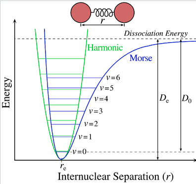
where:
where:
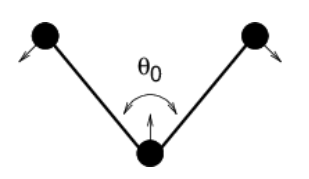
Single Bond angle vibration is represented by an harmonic potential too, but is less stiff than the bond distance.
Dihedral angles present a periodic behaviour energy-wise.
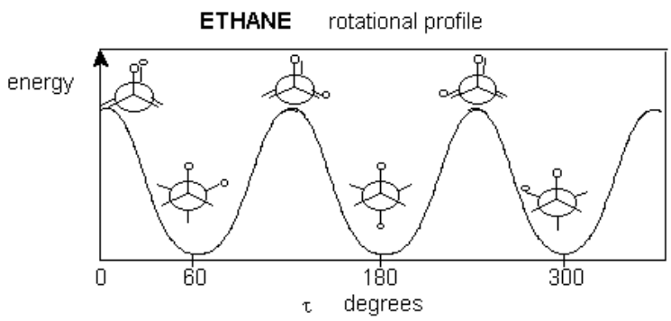
The different conformations of side chains due to rotatable bonds are called rotamers.
Torsion energies of the dihedral angle are described by the angles and their multiplicities, and are the source of conformational flexibility for the same protein structure.
A possible form for modeling this:
Frequently formed in smaller proteins where are needed for the stabilization, because non-covalent forces are too small
The interaction of a protein with the solvant has a big impact on the energetics of the system. Solvation involves bond formation, hydrogen bonding and Van der Waals forces.
Solvation energy is the term used for describing the energetic change of the system due to this interactions, which wouldn’t occur in vacuum.
Every atom has a specific solvation energy per surface, which can be computed, but it’s expensive. Considering all pairwise interactions between the protein and the water molecules in in practice not done, due to the large number of degreees of freedom needed to model water.
A simplified model assumes that solvation energy is proportional to the surface area buried after folding.
Born energy is the term used for describing the change in free energy of transferring an ion from a medium of low dielectric constant (i.e the interior of the protein) to one of high dielectric constant (i.e the surface in contact with water).
The hydrophobic effect is the observed tendency of nonpolar substances to aggregate in an aqueous solution and exclude water molecules, and constitutes the strongest driving force for protein folding.
Water forms ordered arrangements (cages) around hydrophobic solutes, with low entropy. If hydrophobic sidechains are packed together, the entropy of the solvent is higher, which is energetically favorable.
Under statistic mechanics, entropy is proportional to the number of possible microscopic configurations (microstates), which could give rise to the observed macroscopic state (macrostate) of the system.
Boltzmann entropy equation:
where:
Clasical thermodynamics:
Applied to proteins:
In order to be able to fold, proteins have to compensate this loss of entropy by enthalpic contributions.
Furthermore, how do proteins find the lowest energy state?
The Levinthal paradox states that the number of possible conformations that can be reach by a protein with a certain sequence is so high, that if proteins would “try out” all of them until they found the right one, it would need more time than the current age of the universe to find its correct fold.
In conclussion: Protein folding is not a random or exhaustive search, it occurs along a gradient towards the global minimum, as visualized in the folding funnel.
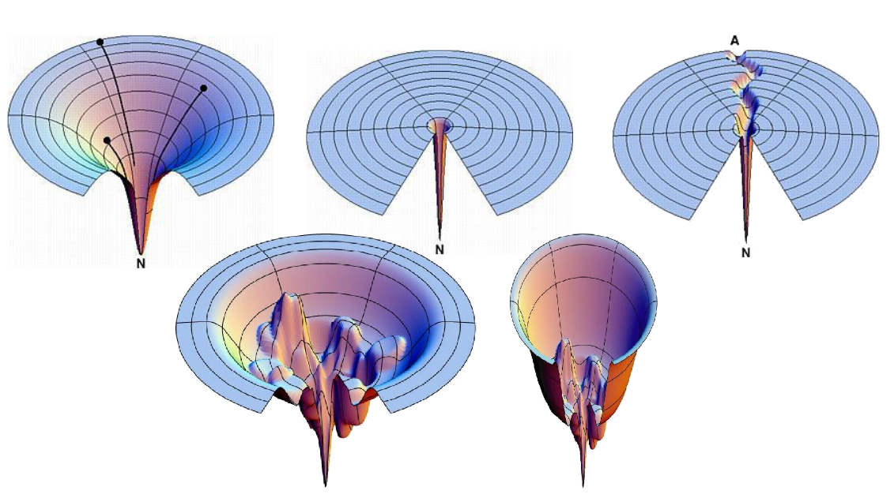
Some properties of this model:
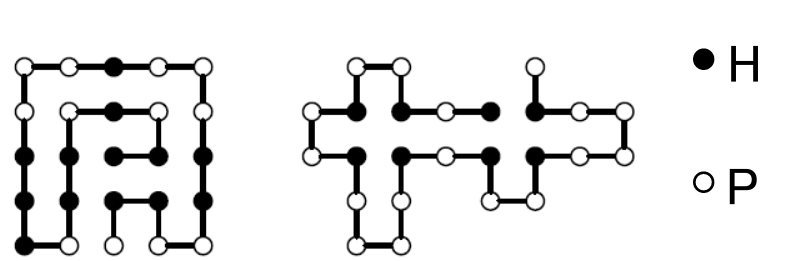
Thermodynamic hypothesis: Proteins fold into the conformation of minimal free energy. By finding this minima we can solve the protein folding problem.
Proteins are flexible, and this is essential for function. This can be simulated in several ways, with different degrees of accuracy. 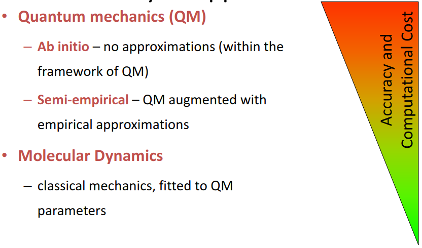
Is the easiest method computationally speaking. Models forces using hook’s law (harmonic potential), doesn’t take into account quantum effects and doesn’t treat electrons explicitly. The time complexity of considering bond mediated interactions is . Considering spatial interactions, is , where k is the number of elements considered for the spatial interactions.
A force field is a model whose objective is describing the energetic landscape of the different possible conformations of a molecule. For that purpose a force field describes the interactions through different analytical forms, and contains also knowledge-derived parameters that make possible this modelization and rules to associate parameters to atom types. They can make use of different treatments of the analytical forms (classical treatment, ML derived…) Parametrization can be:
Some examples of Force fields often used for protein structure prediction are AMBER, CHARMM and GROMOS.

Five contributions:
It also uses additional constraints to keep planar systems (aromatic rings) planars.
It uses 54 different atom types, i.e:
Can be modeled using classical mechanics in function of position velocity and acceleration: Three newton laws of motion.
Acceleration: can be computed derived from forces and masses thanks to the equation:
Force can be derived,as commented, from the energy thanks to the equation:
where
Then this information can be used for creating a system of linear equations, which can be numerically solve yielding a simulated molecular dynamics.
Trajectory: the path that an object with mass in motion follows through space as a function of time.
Trajectories can be found integrating the equations of motion.
The positions of the elements of the system is not sufficient to describe the state of a dynamic system.
Phase space: Positions + momentums of the elements of the system describing its state.
Simulation of the dynamics of molecular systems based on force fields and associated equations of motion. e.g Derivatives of AMBER terms.
They can make use of cut-off radii: Compute interactions only with molecules in a ball centered on the particle with a given radius. but:
They introduce discontinuities (solved using solution-shifting functions or switching functions)
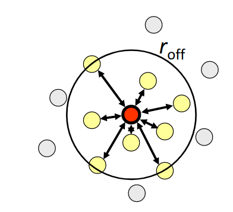
This is an infinite power series, but are usually approximated by terminating series.
Uses information of current and preceeding timestep to compute position and forces for the next time step. At time t, t r(t) and r(t- t are known)
After the computation of the next discrete position, iteration starts again.
It can be modified to be used with velocities:
Where also an initial condition is necessary because is not defined
Time step:
Can be treated explicitly. But simulations become very expensive.
https://sites.engineering.ucsb.edu/~shell/che210d/Advanced_molecular_dynamics.pdf
If T is constant: the canonical NVT-ensemble treats pressure and energy as variables, and the different temperatures describe the tendence of the system to fold or not. If we want to consider a system where the temperature is not constant, we have to consider the changes in the molecular kinetics produced by this changes. Several different strategies:
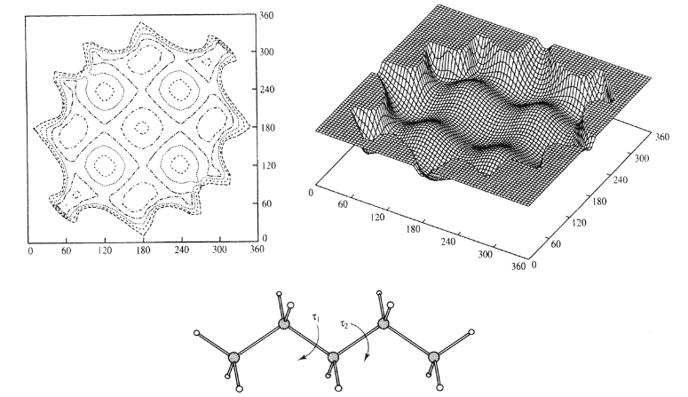
Energetic landscape: The collection of points over the different variables ) constitutes an Hyperplane.
Local Minima in this hyperplane correspond to energetically favorable conformations.
The global minimum corresponds to the fold of the molecule.
Properties of molecular systems defined by the average over all molecules.
Ensemble average weighted by relevance:
Ergodic hypothesis: Time average = ensemble average.
Local minima are easier to find than global minima.
The gradient points towards the steepest slope of f at a given point.
It’s intuitive to follow this gradient until we reach a point with (or a threshold for the root mean square of the gradient previously defined), which corresponds to a minima, maxima or a saddle.

Disadvantages:
It keeps memory of the last search direction.
Where is the weight of the last search direction, a parameter than needs to be set properly.
Gradient descent methods are able to find only local minima, which can correspond to the global maximum or not.
Other methods need to be used if we want to find the global minimum for sure.
Only feasible for a small number of degrees of freedom. It leads to combinatorial explosion very fast.
The number of degrees of freedom can be reduced drastically:
Ensemble corresponds to phase space (6N) integral.
Random sampling can be used for estimating this integral Monte-Carlo method
Randomly sample conformational space.

Problem: Too many irrelevant conformations are sampled.
The boltzmann distribution is used for building a markov chain with a sample rejection probability.
A markov chain is a stochastic model, where the current state of the system only depends on the previous state (it has no memory).
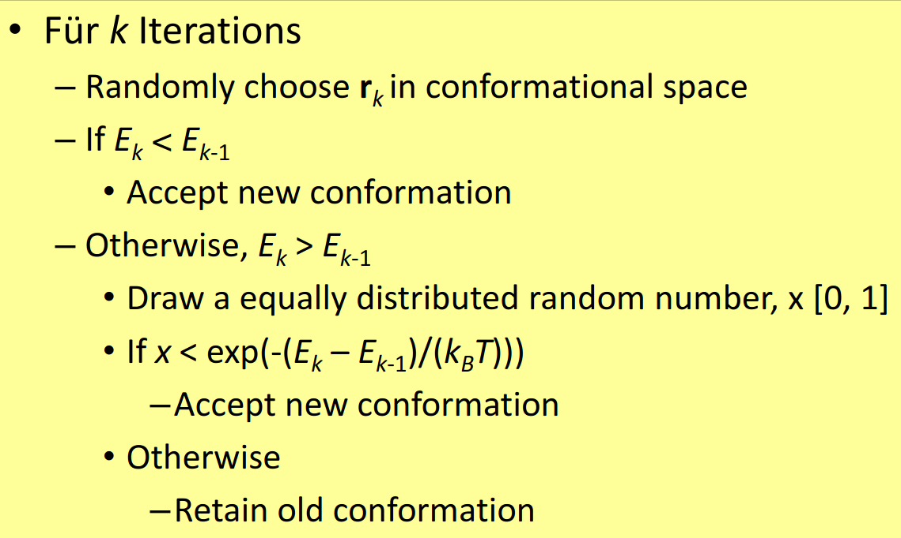
with probability of moving to a new point:
So, if the value of the new point is bigger, it always moves to it, if not, there-s a rejection probability.
This simulation results in a trajectory and associated energy, but there’s no temporal correspondence between succesive points in the trajectory. It’s used to estimate average properties, but also to find minima as the trajectory samples favorable states more often.

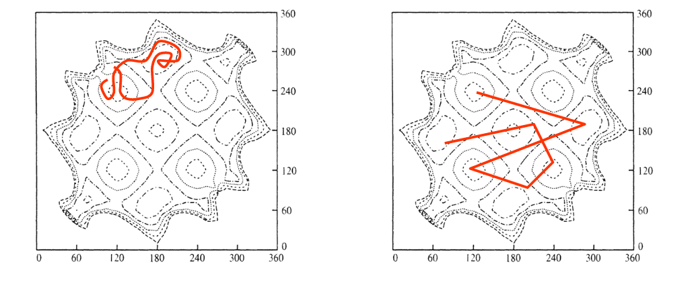
Similar to MCMC sample, but the goal is not representing the underlying mathematical function, but finding the global minimum using a metaheuristic approach.
Adds a new parameter, T.
This results in a rejection probability dependent on the temperature: If the temperature is very high the system will act as a random walker. If it’s very low as a MCMC.
Cartesian: Is more flexible, but has many irrelevant conformations Torsion Space: Reduced to main variables, the search is efficient but not all conformations are possible

For simulations considering temperature, simulated annealing is used: First the simulation is started with a high temperature, where the system behaves as a random walker, as we lower temperature, the system starts to reject samples, leading hopefully to the global minima, and being able to find the local minima feasible at different temperatures.

Semi-empirical based on approximations of quantum-chemistry, such as force-fields, have a low accuracy predicting the folding of proteins. This was proved in “An analysis of incorrectly Folded protein Models” by Karplus, where it was possible to minimize the incoherences between two unrelated proteins, resulting in a false positive for homology.
This is because force-fields calculations sometimes fail to capture some interactions between side-chains or more distant atoms that result in unfeasible folding predictions.
The Bolzmann distribution relates potential energy and temperature to probability
where T is temperature and is the Boltzmann constant

Key properties:
Sometimes it’s difficult to predict the overall energy of a macro/microstate, but the probability ratio between two states can be efficiently calculated:
We can estimate the difference in energy between two states from their counts using the inverse Boltzmann law:
Using this and taking into account different relationships (i.e. distances between that are 4 positions away in the chain), the relative frequencies of the different distances can be used to create Boltzmann distributions of the different distances for particular cases. This are the so-called DB-derived Mean Force potentials.

DB-info can be used to derive estimations of solvation energies. For that, we define a -neighborhood in the euclidean space of the different types of aminoacids and count the number of neighboring aminoacids, relative to the overall aa-types:
leading to estimations of the position of the different aminoacids to the water accesible area:

Mean force potentials failed to be a good folding-prediction tool, but are a powerful tool for:
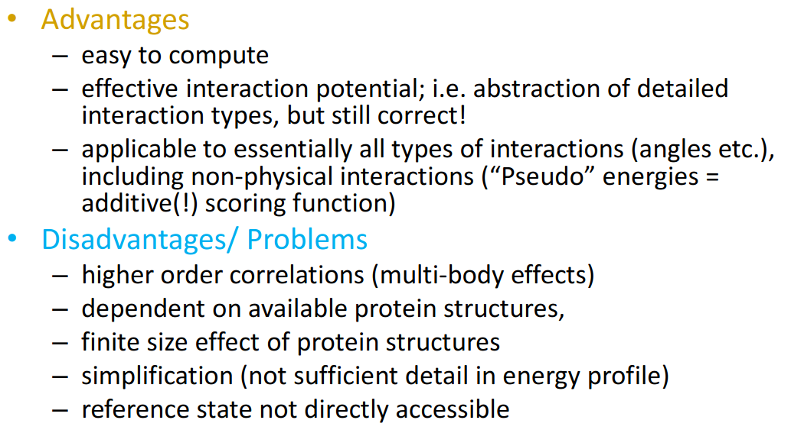
Protein function is determined by their interaction with other proteins:
Proteins interact with other proteins mostly through large hydrophobic flat areas (interfaces), where some charged residues define the orientation of the interaction. These interactions usually involve intermediary water molecules for creating hydrogen bonds. The contribution to the energy of the interaction is not uniform: few residues correspond to the main part of the energy.
Protein flexibility:
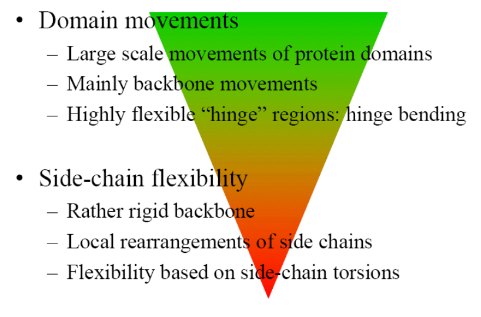
Although their limits are sometimes blurred, there are three main in-silico approaches for finding protein-protein interactions:
Mostly assume protein are rigid bodies and a key-lock model. Overview of the general algorithm:
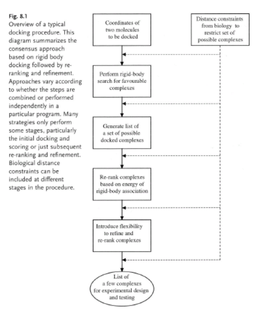
Models use 6 degrees of freedom (X, Y, Z-rotation, translation). Modifying those parameters they try to find the rigid transformation bringing B in contact with A. They take into account both spatial and chemical interactions.
Proteins are discretized, transformed into a 3d matrix, where each cell can have different values:
Larger protein’s position is fixed, the bins corresponding to the core of the molecule have a negative value (penalization score), the surface has a value of one and the outside a value of 0.
Smaller protein can have only two values: 1 in the interior of the molecule and 0 on the outside.
Then the shape complementarity is calculated as the convolution of a on b:
The objective is to maximize this function, where for each bin contributes: +1 if there’s an overlap between smaller protein and surface of bigger protein. p (for example -15) if the smaller protein overlaps with interior of bigger protein. 0 otherwise.
Exhaustive search is , if Fourier Fast transform is used.

Assumes the backbone is rigid and side chains are flexible.
Algorithm rearranges side chains and calculates energy.
Classical docking problem for finding interactions in a database where we only have information about the sequence of the proteins. Force fields using for predicting the conformations.
If we consider all against all, the search becomes fast computationally intractable, so instead docking by homology is used.
There are several evolutionary signs that could suggest that two proteins interact:
Range of in-silico techniques for searching large compound databases to select a smaller number for biological testing

Structurally similar proteins tend to have similar properties Three components are used for measuring the similarity between 2 molecules:
https://sci-hub.se/https://doi.org/10.1016/B978-0-12-801505-6.00008-9
Pharmacophore are a fingerprint representation of the necessary properties for a molecule in order to be able to interact with a given target.
Resources: https://sci-hub.se/https://doi.org/10.1016/B978-0-12-801505-6.00010-7
 Resources:
Resources:
[https://www.sciencedirect.com/science/article/pii/S1359644617304695](Short review about the whole lecture)
[https://sci-hub.se/10.1016/b978-0-12-801505-6.00006-5](Extensive chapter of a book)
Similar ligands bind to the same binding site or to dissimilar proteins if they have similar binding sites. So, binding site prediction is vital. Some facts about binding site that can be used for predicting them:

: Disociation constant, measures the rate of disociation of the complex protein ligand, and measures the strength of the binding. The lower the constant the stronger the binding.
Specifity: Specifity of ligand binding is also of high interest for drug design: Ligands with low specificity are more likely to have big side effects or toxicity.
Several algorithmic approaches are used for the dentification of pockets.

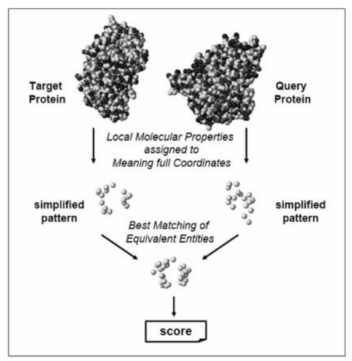
First, pockets are indentified, from the surface shape or from the distance between the residues involved and a crystallized ligand. Residues involved in pockets are then transformed into a simplified representation of the 3D coordinates of the atoms involved or of pseudoatoms (properties of groups of atoms related to the pharcopore, such as aromatic groups, H-bond donors…)
Resources:
https://pubs.acs.org/doi/10.1021/acs.accounts.5b00516
Whole section: https://www.sciencedirect.com/science/article/pii/S2001037014600179
Different possible approaches:
Iterative search for the best translation/rotation, done in two steps:
Similarity between predicted cavities have to be scored in order to find candidate proteins with similar functions, etc. There’s not a single best measure of structural similarity, so several can be used, for example:
Constant conformational changes in proteins add a lot of complexity to the computational problem, when it’s possible to predict correctly, so they are modeled as rigid objects. Proteins suffer conformational changes due to allosterism and ligand binding. Usually the proteins used for training algorithms are in holo state (bound to a ligand). That adds additional imprecision.

Two steps:
It has to deal with many degrees of freedom:
Different combinations are called poses.
It tries to cover the search space as exhaustively as possible, but there’s a tradeoff between time and space coverage.
Conformational space can be explored before docking or at runtime:
Before docking: An ensemble of conformations is created before docking and they are treated as rigid bodies.
At runtime, additional degrees of freedom related to the conformation of the ligand are considered and explored using methods such as MCMC. 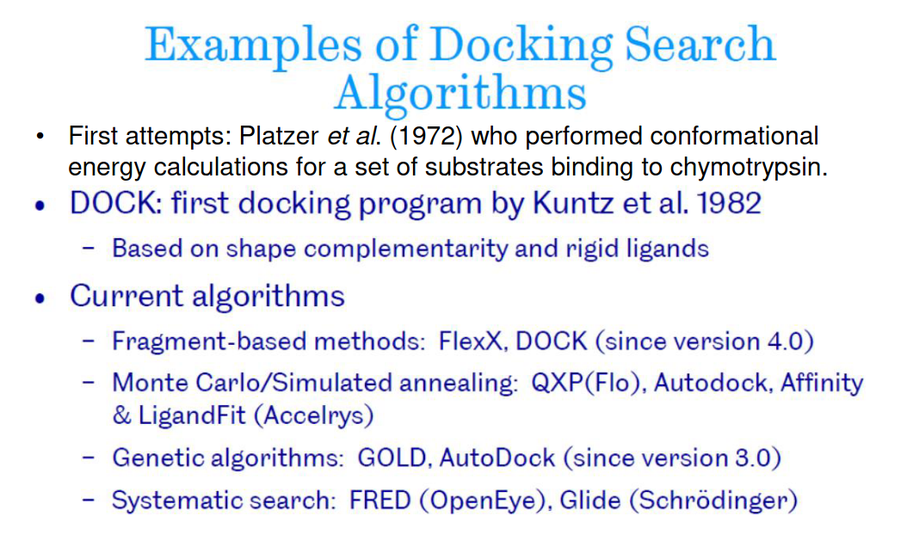
DOCK(1982): Rigid docking. Fills the cavity with spheres touching two atoms. The spheres become potential sites for ligand atoms. Ligand are matched to these spheres. If it’s feasible it’s scored. The algorithm returns the pose with the best score.
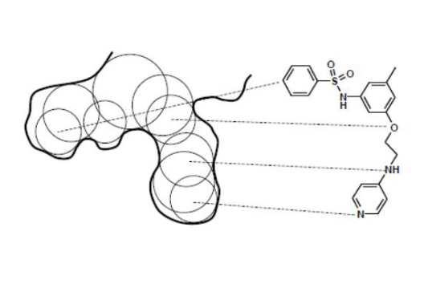

Prediction of secondary structure is an important step towards the prediction of the whole 3D structure. It determines up to some point the global fold.
The driving forces can be assumed to be found in the local characteristics of the polypeptide chain.
3 main target classes:
All three classes have a similar frequency.
Other classifications:
Alpha helix has an overall dipole caused by the dipoles of the carbonyl groups found in the peptide bond, all pointing along the helix axis, resulting in a positive dipole towards the N-terminus.
This overall dipole can destabilize the helix. That’s why alpha helices are often capped by a N-terminal positively charged aminoacid.
This dipole is also of importance because the N-terminal positive charge can be often used to bind negative charged ligans, such as phosphates.
Aminoacids are observed at different frequencies in the different secondary structural element types.
These propensities can be used to predict secondary structure. 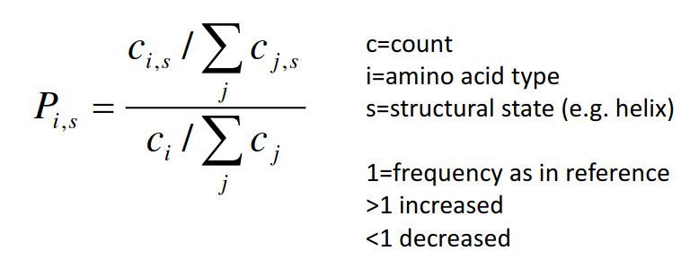
Log(odds)

Aminoacid classifications:

Different methods can make use of already determined propensities:
Pseudocode:
 Problem: it doesn’t take into account the structure of the neighbors
Problem: it doesn’t take into account the structure of the neighbors


Based on Helix-coil transition theory, general for polymers but often used for proteins. Tries to capture the difference in energy between a coil random structure and an -helix.
where:
are the intrinsic tendencies of the residues to adopt helix conformation.
are the contributions of main chain and i, i+4 hydrogen bonds
Sums the net contributions with respects to the random coil state of all side chain interactions.
Captures the contribution to stability of N and C terminal residues.
represents the iteraction of charged groups with the helix macrodipole
Trans membrane proteins constitute 30% of all proteins in a cell, and receptors are an important target for pharmaceutical industry.
Aminoacids are differentially hydrophobic, and that’s often used for prediction of transmembrane elements.
Structurally, they tend to have charged residues flanking hydrophobic segments, and the positively charged extrem tend to face towards the cytoplasm (weaker in Archaea).
Sometimes they also have amphipathic -helix after the hydrophobic region to interect both with the environment and the cell layer. They tend to have a repetitive structure of charged and hydrophobic residues alternating with a repeat distance corresponding to the period of the structure. This can be seen in a helical wheel plot and hydrophobic moments (a vectorized representation of the hydrophobicity of the sequence).
The starting point are propensity tables for the different aminoacids representing how likely is for a given aminoacid to interact with water.
Both for flanking and hydrophobic region are calculated.
 There are different likelihood tables:
There are different likelihood tables:

Also markov-chain models are used to solve this problem, and neural networks.
-barrel element prediction is mostly based on hydropathy analysis and similarity search. 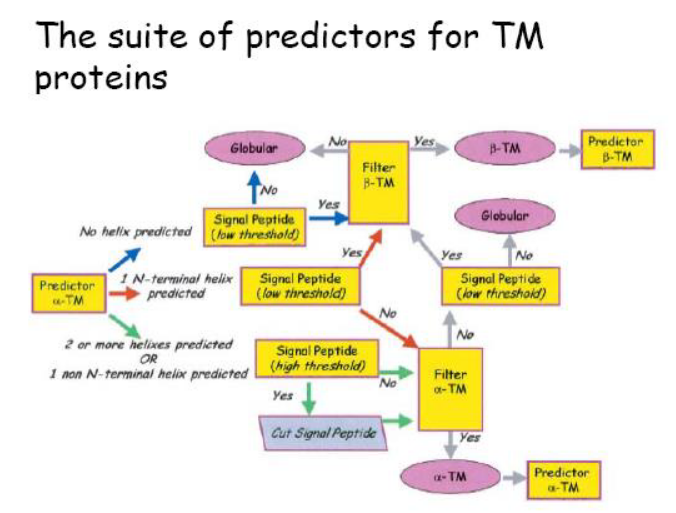
Biggest databases result in more accurate predictions.
The number of protein structures known in the PDB has grown steadily but at a much lower pace than the number of sequences found in Uni-Prot. Homology tends to conserve both tertiary and secondary structure, solvent accesibility, and finally function. That’s why homology is a valuable information that can be used for structure prediction. Basic assumptions:
The correct inference of a shared secondary structure by the level of homology between the two sequences depends on the length of the alignment (x axis) and the percentage of homology (y axis). 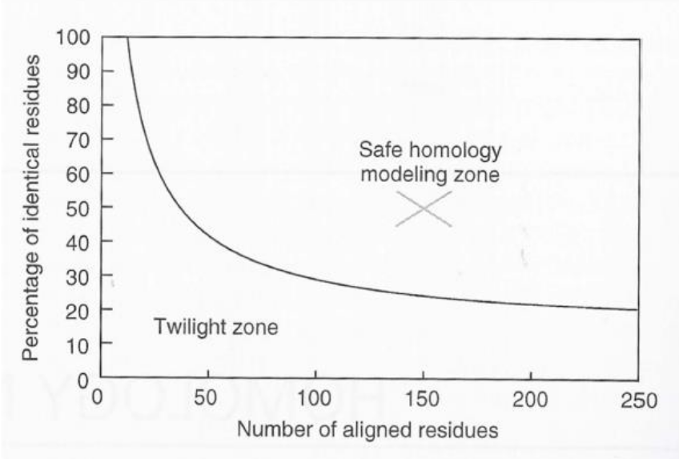
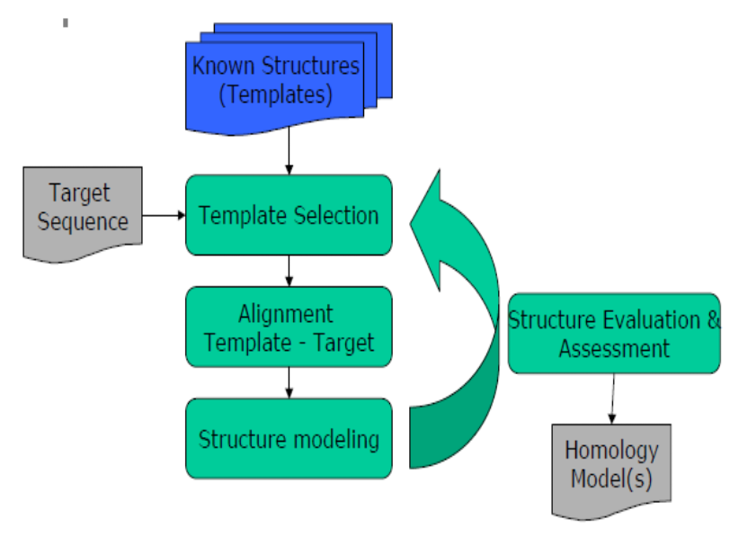
Done in function of:
Usually iterative cycles of aligment, modeling and evaluation are done in order to choose the best model possible.
Using dynamic programming, and probably a MSA.
The regions related to secondary structural elements should be conserved, because changes in those regions are likely to result in proteins with different global structures.

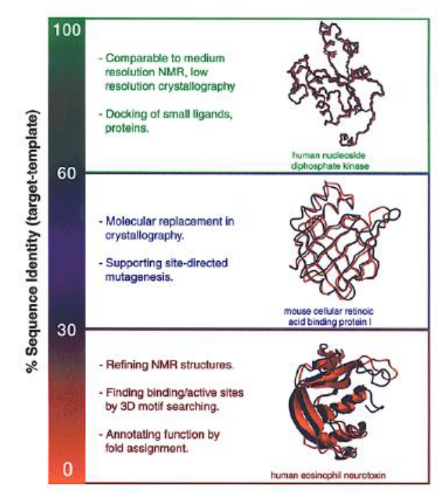

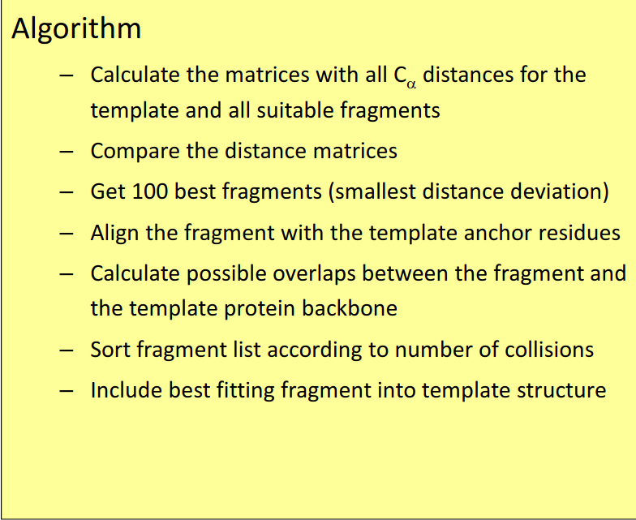
Most used rotamer library, with two variants: Backbone-independent and backbone dependent. Contains up to 81 rotamers per aminoacid. Backbone-dependent are given for binned phi/psi angles. For every rotamer the following values are given:

Proposed by Desmet et al. and Branch&Bound-like It states that if for two rotamers and :
Then is not part of the optimal solution, because the lowest energy while using is higher (hence “worse”) than the highest energy using
 Remaining search space can be tested by enumeration.
Remaining search space can be tested by enumeration.
Highly dependent on the search algorithm used and the quality of the rotamer library. Quality measures:
In general the process is more accurate for side chains in the hydrophobic core and low for surface residues, due to the presence of charged AAs, which can adopt many rotation angles and can rotate the charged end influenced by surrounding water molecules.
Folding problem: Given a sequence find its fold
Inverse folding problem: Given a fold find the sequences compatible with it,
A given sequence can be compatible with a fold, but that sequence can have other folds with a more favorable energy.
Threading is the name given for a familiy of algorithms, which for a given sequence, and a set of folds (a template library), try to finding among template structures the fold most compatible with the sequence. For that purpose, threading “threads” the sequence along the protein while it uses as score for the alignment an energy function, which aims to be minimized.
In reality, as we’ve seen in another problems, considering all the forces leading to a given system’s energy is computationally very expensive. So, considering all the possible correspondences between the sequence and each of the templates is computationally unfeasible. For this reason, we need efficient search algorithms and a reduced search space. Even in reduced search spaces, the search is NP hard.
Usually the whole sequence is not considered and only the parts of the sequence corresponding to secondary structural elements are considered. Furthermore the sequences can be split by PDB chains, by different domains, by fragments…
Usually the energies driving to a given fold are split into different sources:
And the individual terms are deduced from relative counts of certain patterns in knowledge based on the analysis of databases and the boltzmann distribution. The w corresponds to weight to account for the different importance of each energy.
: Individually it describes the interaction of a residue of a given type with its environment (secondary structure and position relative to the surface of the protein). The whole term considers the effect of all residues in the sequence.
: Quantifies the energy of the pairwise interactions. For that purpose, usually the pairwise interactions of the different residue types, measured from different atoms ($c_\alpha - c_\beta, c_\beta - N…) and at different distances is considered.
: Quantifies how well the sequence mutates into the template target sequence, based in classical distance matrix like PAM or BLOSUM.
: Gap penalty scoring gaps in the alignment.
: Quantifies the compatibility between the second structural elements found in the query sequence (if known) and the template structure.
There are several methods needed for making the search of possible configurations more efficient:
Account mainly for , the 3D structure of the template sequence is reduced to a sequence discretized environmental categories (can also be split by secondary structural elements):

the score of each residue is given by , where is the probability of finding residue i in environment j, and is the overall probability of i among all classes
3D profiling example (Bowie et al.):

There’s no proabilistic model for quantifying the probability of a given template being the correct fold of the sequence.
Confidence measures are used instead:
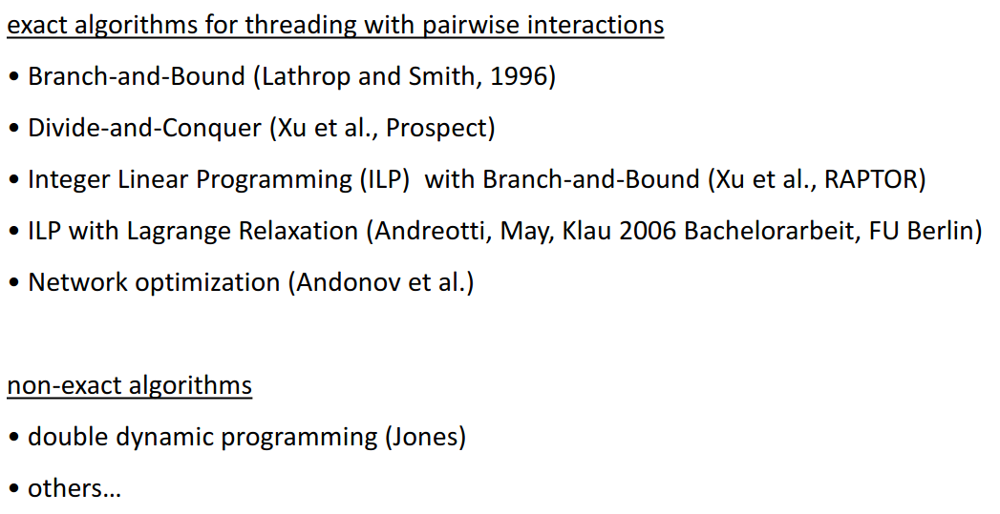

Calculates pseudo-energies by counts, splitting the distances into three categorical values (Short (), Medium and Long (k > 30), considering several different atom pairs and adding solvation potential)

The branch and bound method is an exact method for searching for an optimal alignment, but it takes exponential time in the size of the protein. The algorithm functions by assuming that each solution can be partitioned into subsets, and that the upper limit on a subset’s solution can be computed quickly. In the diagram, each circle illustrates the space of possible threadings, the solid lines indicate partitions made in a previous step, and dashed lines indicate partitions made in the current step. Furthermore, numbers indicate lower bounds for newly created subsets, and arrows indicate the set that was partitioned. Branch and bound selects the subset with the best possible bounds, subdivides it, and computes a bound for each subsequent subset. The aspects of this search which determine its efficiency are how the lower bound for the set of possible threadings is computed, and how the threading set is partitioned into subsets. Ideally, the lower bound should take into consideration the interaction of the set with the preceding set, and the best interaction with other sets. A threading set is partitioned by selecting a core segment, and choosing a split point in the set.
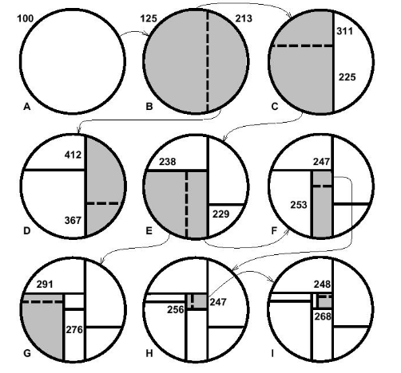
CASP is a “benchmark” for measuring the accuracy of the different state of the art protein prediction pipelines. It’s needed, because scientists are biased and it’s difficult to compare methods fairly. Its goals are: